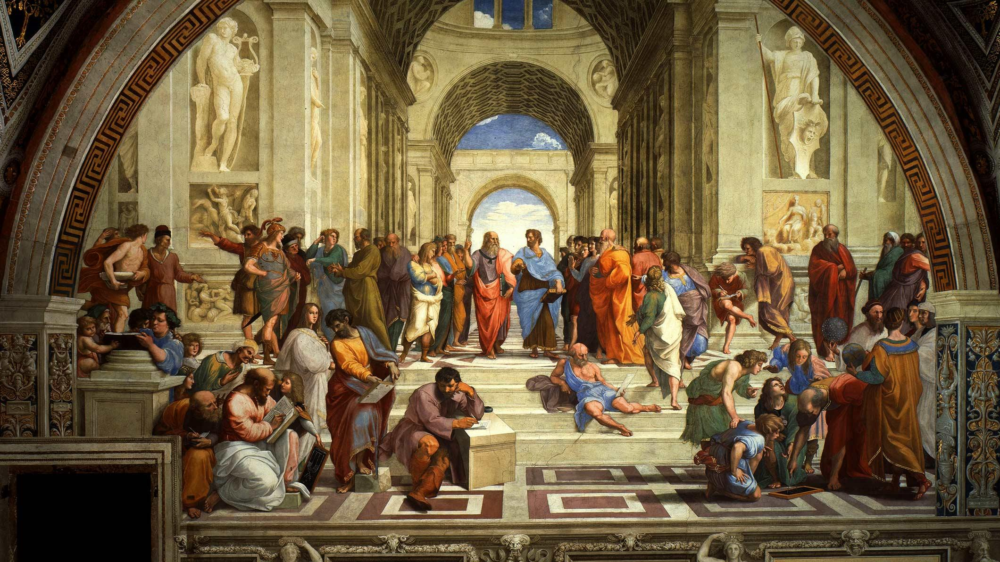

README
Table of Contents
- 1. Intro
- 2. 艺术 Art
- 2.1. 1 文学 Literature
- 2.2. 2 绘画 Painting
- 2.3. 3 雕塑 Sculpture
- 2.4. 4 音乐 Music
- 2.5. 5 戏剧 Drama
- 2.6. 6 舞蹈 Dance
- 2.7. 7 歌曲 Song
- 2.8. TODO 建筑 Architecture
- 2.8.1. 室内设计 Interior Design
- 2.8.2. 建筑设计 Building Design
- 2.8.3. 79W 多伦多 Torondo 加拿大国家电视塔 CN Tower
- 2.8.4. 6W 都柏林 Dublin 爱尔兰 Ireland 都柏林尖塔 Monument of Light
- 2.8.5. 0 伦敦 London 伦敦眼 The London Eye
- 2.8.6. 2E 巴黎 Paris 埃菲尔铁塔 Eiffel Tower
- 2.8.7. 2E 巴塞罗那 Barcelona 西班牙 Spain 阿格巴塔 Torre Agbar
- 2.8.8. 13E 柏林 Berlin 柏林电视塔 Fernsehturm Berlin or Television Tower
- 2.8.9. 103E 新加坡 Singapore 滨海湾金沙 Marina Bay Sands
- 2.8.10. 116E 北京 Beijing 中央电视台总部大楼 CCTV Headquarters
- 2.8.11. 121E 上海 Shanghai 东方明珠 Oriental Pearl Tower
- 2.8.12. 121E 台湾 Taiwan 台北101大楼 Taibei 101
- 2.8.13. 139E 东京 Tokyo 东京铁塔 Tokyo Tower
- 2.8.14. 151E 悉尼 Sydney 悉尼歌剧院 Sydney Opera House
- 2.9. 摄影 Photography
- 2.10. 电影 Movie or Film
- 2.11. 游戏 Game
2 艺术 Art
2.1 1 文学 Literature
2.1.1 BC91 史记
http://so.gushiwen.org/guwen/bookv_149.aspx 仓廪实而知礼节，衣食足而知荣辱，上服度则六亲固。四维不张，国乃灭亡。下令如流水之原，令顺民心。 —— 《管晏列传》
2.1.2 BC289 三国志
才武绝人，莫之能害。博览群书，特好兵法，抄集诸家兵法，名曰接要，又注孙武十三篇，皆传於世。尝问许子将："我何如人？"子将不答。固问之，子将曰："子治世之能臣，乱世之奸雄。"太祖大笑。 —— 《三国志 卷一 魏书一 武帝纪第一》 彧度绍终不能成大事，时太祖为奋武将军，在东郡，初平二年，彧去绍从太祖。 —— 《三国志 卷十 魏书十 荀彧荀攸贾诩传第十》 董卓无道，甚于桀纣，天下皆怨之，虽资强兵，实一匹夫耳。今直刺杀之以谢百姓，然后据殽、函，辅王命，以号令天下，此桓文之举也。 —— 《三国志卷十 魏书十 荀彧荀攸贾诩传第十》 夫曹公奉天子以令天下，其宜从一也。绍强盛，我以少众从之，必不以我为重。曹公众弱，其得我必喜，其宜从二也。夫有霸王之志者，固将释私怨，以明德於四海，其宜从三也。愿将军无疑！ —— 《三国志 卷十 魏书十 荀彧荀攸贾诩传第十》 愚民不可计事。 —— 《三国志 卷十四 魏书十四 程郭董刘蒋刘传第十四》 夫智者审于量主，故百举百全而功名可立也。袁公徒欲效周公之下士，而未知用人之机。多端寡要，好谋无决，欲与共济天下大难，定霸王之业，难矣！—— 《三国志 卷十四 魏书十四 程郭董刘蒋刘传第十四》 然折而不挠，终不为下者，抑揆彼之量必不容己，非唯竞利，且以避害云尔。 —— 《三国志 卷三十二 蜀书二 先主传第二》 身长八尺，每自比於管仲、乐毅，时人莫之许也。 —— 《三国志 卷三十五 蜀书五 诸葛亮传第五》 霍去病以匈奴未灭，无用家为，令国贼非但匈奴，未可求安也。须天下都定，各反桑梓，归耕本土，乃其宜耳。益州人民，初罹兵革，田宅皆可归还，今安居复业，然后可役调，得其欢心。 —— 《三国志 卷三十六 蜀书六 关张马黄赵传第六》 以明将军之英才，乘刘牧之懦弱；张松，州之股肱，以响应于内；然后资益州之殷富，冯天府之险阻，以此成业，犹反掌也。 —— 《三国志 卷三十七 蜀书七 庞统法正传第七》 良田百顷，不在一亩，但有远志，不在当归也。 —— 《三国志 卷四十四 蜀书十四 蒋琬费祎姜维传第十四》 策虽暗稚，窃有微志，欲从袁扬州求先君馀兵，就舅氏於丹杨，收合流散，东据吴会，报雠雪耻，为朝廷外藩。 —— 《三国志 卷四十六 吴书一 孙破虏讨逆传第一》 丈夫生世，当带七尺之剑，以升天子之阶。今所志未从，奈何而死乎！ —— 《三国志 卷四十九 吴书四 刘繇太史慈士燮传第四》 操虽讬名汉相，其实汉贼也。将军以神武雄才，兼仗父兄之烈，割据江东，地方数千里，兵精足用，英雄乐业，尚当横行天下，为汉家除残去秽。况操自送死，而可迎之邪？ —— 《三国志 卷五十四 吴书九 周瑜鲁肃吕蒙传第九》 向察众人之议，专欲误将军，不足与图大事。今肃可迎操耳，如将军，不可也。何以言之？今肃迎操，操当以肃还付乡党，品其名位，犹不失下曹从事，乘犊车，从吏卒，交游士林，累官故不失州郡也。将军迎操，欲安所归？愿早定大计，莫用众人之议也。 —— 《三国志 卷五十四 吴书九 周瑜鲁肃吕蒙传第九》 贫贱难可居，脱误有功，富贵可致。且不探虎穴，安得虎子？ —— 《三国志 卷五十四 吴书九 周瑜鲁肃吕蒙传第九》
2.2 2 绘画 Painting
2.2.1 1510 雅典学院 The School of Athens

2.3 3 雕塑 Sculpture
2.3.1 BC200 萨莫德拉克的胜利女神 The Winged Victory of Samothrace
.JPG/375px-Victoire_de_Samothrace_-_vue_de_trois-quart_gauche,_gros_plan_de_la_statue_(2).JPG)
2.4 4 音乐 Music
2.4.1 1990 吞食天地2
2.4.2 2000 英雄无敌3 Heroes of Might and Magic III
2.5 5 戏剧 Drama
2.5.1 1602 哈姆雷特 Hamlet
2.5.2 2014 林檎博 年女的逆袭
https://www.bilibili.com/video/av2800199/ 0500 葬列
2.6 6 舞蹈 Dance
2.6.1 2013 WDSF PD World Latin Samba
2.6.2 2017 WDSF World Open Latin Total
2.7 7 歌曲 Song
2.7.1 2001 逃亡 孙燕姿
我站在靠近天的顶端，张开手全部释放，用月光取暖，给自己力量。
2.7.2 2004 执着 许巍
无法停止我内心的狂热，对未来的执着。
2.7.3 2005 向阳花 谢天笑
向阳花，如果你只生长在黑暗下，向阳花，你会不会再继续开花？
2.7.4 2008 茶底世界 丢火车
对我说永远永远，是不一样的生活。
2.7.5 2009 彩虹 张惠妹
当天空灰暗，当气温失常，你用巨大的坚强，总能抵挡。
2.7.6 2010 阳光中的向日葵 马条
它把头转了过去，就好像是为了一口咬断那套在它脖子上的、那牵在太阳手中的绳索。
2.7.7 2014 白兰鸽巡游记 丢火车
他就在远方，不要停止追寻着他。
2.8 TODO 建筑 Architecture
建筑设计和室内设计的区别 https://www.zhihu.com/search?type=content&q=建筑+设计+区别 https://www.zhihu.com/question/36402757 室内设计是建筑设计的分支。是建筑设计细化的结果。从本质上加，室内设计只是建筑设计在尺度上进一步细化的过程。也就是建筑设计考虑的是建筑和基地的关系，那室内设计考虑的是内部空间和建筑的关系。 https://www.zhihu.com/search?type=content&q=室内+设计+奖项 https://www.zhihu.com/question/52030582 https://www.zhihu.com/search?type=content&q=建筑+设计+奖项 https://www.zhihu.com/question/20103442/answer/13988033
2.8.1 室内设计 Interior Design
2.8.2 建筑设计 Building Design
2.8.3 79W 多伦多 Torondo 加拿大国家电视塔 CN Tower

2.8.4 6W 都柏林 Dublin 爱尔兰 Ireland 都柏林尖塔 Monument of Light

2.8.5 0 伦敦 London 伦敦眼 The London Eye

2.8.6 2E 巴黎 Paris 埃菲尔铁塔 Eiffel Tower

2.8.7 2E 巴塞罗那 Barcelona 西班牙 Spain 阿格巴塔 Torre Agbar

2.8.8 13E 柏林 Berlin 柏林电视塔 Fernsehturm Berlin or Television Tower

2.8.9 103E 新加坡 Singapore 滨海湾金沙 Marina Bay Sands

2.8.10 116E 北京 Beijing 中央电视台总部大楼 CCTV Headquarters

2.8.11 121E 上海 Shanghai 东方明珠 Oriental Pearl Tower

2.8.12 121E 台湾 Taiwan 台北101大楼 Taibei 101

2.8.13 139E 东京 Tokyo 东京铁塔 Tokyo Tower

2.8.14 151E 悉尼 Sydney 悉尼歌剧院 Sydney Opera House

2.9 摄影 Photography
摄影奖项 https://www.zhihu.com/search?type=content&q=摄影+奖项 https://www.zhihu.com/question/19961055
2.10 电影 Movie or Film
2.10.1 1995 攻壳机动队
百度 攻壳机动队 1995 http://www.le.com/ptv/vplay/1128428.html 3200 潜水 在束缚中伸展自我。 —— 草薙素子 6030 战斗 7730 眺望、微笑 现在我该去哪里？ —— 草薙素子
2.10.2 2002 攻壳机动队 SAC1
https://bangumi.bilibili.com/anime/1564/play#28958 12话 1830 要在现实生活中拼搏，梦想才有意义，只是把自己投射到别人的梦想里的话，跟死又有什么两样？ —— 草薙素子
2.10.3 2004 攻壳机动队2 无罪
https://www.bilibili.com/video/av5048623/ 7730 战斗 生死去来，棚头傀儡，一线断时，落落磊磊。 9310 营救 独步天下，吾心自洁，无欲无求，如林中之象。
2.10.4 2008 空中杀手
百度 空中杀手 http://www.iqiyi.com/w_19rr3mpfp1.html 015030 挑战 即使是走过无数次的路，也能走到未曾踏足过的地方。 正因为是走过无数次的路，景色才会变幻万千。 经典影评 https://www.zhihu.com/question/22855131/answer/26588920 勇敢直面死亡。
2.11 游戏 Game
2.11.1 1991 FC 吞食天地2
https://www.gamefaqs.com/nes/577333-tenchi-o-kurau-ii-shokatsu-koumei-den/faqs/41018
https://www.baidu.com/s?wd=%E5%90%9E%E9%A3%9F%E5%A4%A9%E5%9C%B02%20fc
VirtuaNes 选项 - 图像设置 - 常规 - 显示帧数 勾选 选项 - 模拟器 - 自动跳帧 勾选 选项 - 模拟器 - 限制帧数 勾选 设置120 选项 - 快捷键 - 即时存档和即时读档使用Esc取消 百度 virtuanes 跳帧 Tab切换帧速 隐藏道具 百度 吞食天地2隐藏物品地详解 http://www.fxxz.com/gonglue/22901.html 阵型 https://tieba.baidu.com/p/553769432 计谋 http://www.youxicheng.net/tstd2/wenda_2266.html 攻略 http://www.acgwolf.com/viewthread.php?tid=50010 4倍速8小时通关。 头像 https://tieba.baidu.com/p/2124963969#!/l/p1